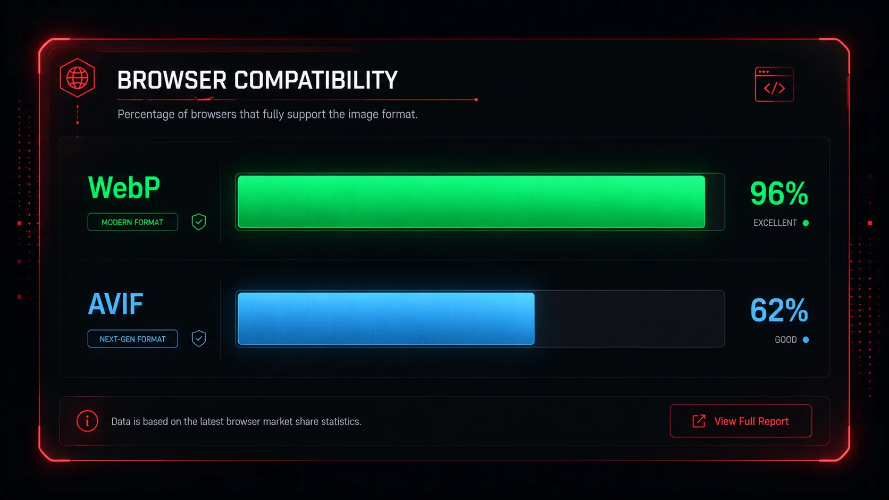

The days of defaulting to JPEG for every photograph and PNG for every logo are officially over. In 2026, web developers, designers, and SEO specialists have an entirely new arsenal of highly optimized, next-generation formats at their disposal.
If you are still building websites using legacy formats, you are severely compromising your site's load speed and Google rankings. In this guide, we explore the modern web image landscape and give you the definitive answer on which formats you should be using for your web projects today.

The End of JPEG and PNG
Before we look at the new formats, we must understand why the old ones are dying. JPEG uses older, inefficient lossy compression algorithms that cause visual "artifacting" (blockiness) and do not support transparency. PNGs support transparency, but use lossless compression that results in massive, bandwidth-hogging file sizes.
The modern web requires a combination of photographic quality, transparency support, and microscopic file sizes. Here are the formats that actually deliver.
1. WebP: The Current Undisputed King
Developed by Google, WebP was created to consolidate the best features of JPG, PNG, and GIF into one unified, hyper-efficient format.
WebP Format The Standard
WebP utilizes predictive coding to drastically shrink file sizes. It offers both lossy and lossless compression, and supports the Alpha Channel (transparency) flawlessly.
- Browser Support: ~96% universal support across all modern devices and browsers.
- Performance: Typically 30% smaller than comparable JPEGs and 26% smaller than PNGs.
- Best Use Case: Literally everything. Use WebP for all standard web photography, blog thumbnails, hero banners, and complex transparent graphics.
- Drawbacks: Older desktop software might need plugins to edit, though this is rare in 2026.
2. AVIF: The Bleeding Edge of Compression
AVIF is newer than WebP and is based on the AV1 video codec. It is an incredibly powerful format designed for the absolute maximum level of compression.
AVIF Format Next-Gen
AVIF takes the predictive coding of WebP and pushes it even further, often yielding file sizes that are an additional 20% smaller than WebP.
- Browser Support: Growing rapidly, but slightly less universal than WebP (mostly lacking in older Safari versions).
- Performance: The absolute smallest file sizes mathematically possible for raster images today.
- Best Use Case: High-traffic media sites (like Netflix) where saving every single kilobyte across millions of users saves thousands of dollars in bandwidth.
- Drawbacks: Encoding time. Converting an image to AVIF requires significantly more CPU power and time than WebP.
3. SVG: The Vector Champion
Unlike WebP and AVIF (which are raster images made of pixels), SVG (Scalable Vector Graphics) is written using mathematical XML code. It draws shapes using coordinates rather than coloring individual squares.
SVG Format Vector Only
Because SVGs are math-based, they have infinitely perfect quality. You can zoom in on an SVG 10,000% and it will never become pixelated.
- Browser Support: 100% universal support.
- Performance: Microscopic file sizes (often just 2KB to 5KB).
- Best Use Case: Company logos, UI elements (like hamburger menus or shopping carts), and simple flat-color illustrations.
- Drawbacks: Cannot be used for complex photographs or images with millions of colors.

"Summary: Use SVG for your UI icons and logos. For absolutely everything else—photographs, banners, and transparent product cutouts—use WebP."
Future-Proof Your Website Today
Don't let legacy formats destroy your Google rankings. Convert your entire media library to WebP securely and instantly.
⚡ Convert to WebP NowFrequently Asked Questions
Should I use AVIF or WebP in 2026?
For 95% of developers and bloggers, WebP is the better choice. It has wider browser support and converts instantly. AVIF is excellent, but the slow encoding time makes it impractical for daily, quick use unless you have dedicated server infrastructure.
Can I convert a photo to SVG?
Technically yes (through a process called vector tracing), but it is a terrible idea. A photograph converted to SVG will look like a strange painting and the file size will be massive. Keep photographs as WebP.
Conclusion
The image landscape has finally matured. By understanding when to deploy SVGs for simple graphics, and using a tool like Webp Moder by Shekh to convert all of your complex photography into WebP, you ensure your website remains lightning-fast, beautiful, and fully optimized for the future of the internet.